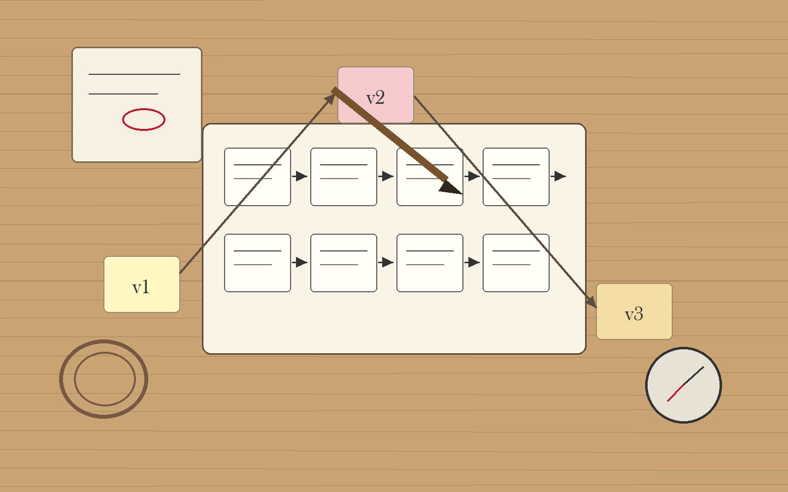

By the end of this session, you can…
- LO 10.1Trace every reward in your game to a learning objective; identify any reward that motivates non-target behavior.
- LO 10.2Estimate cognitive load per scene and say where extraneous load crowds out learning.
- LO 10.3Name three populations your current design excludes and decide which you will accommodate.
- LO 10.4Write one paragraph on the ethical risks specific to your content domain, and the mitigations.
- LO 10.5State what data your game collects, who sees it, and what a player can do to stop it.
What behaviors are you actually paying for?
Players optimize for what you reward, not what you intended to teach. If your fastest path to a high score does not pass through the objective, your reward structure is working against you.

Log five minutes of play. Read the reward mix.
A reward audit is not an opinion. It is a count. Click the buttons below to simulate logging a 5-minute play session from your prototype — every time a reward fires, tag it by kind. The bars on the right update live. The verdict tells you what your current mix is actually teaching.
Reward-mix auditor
Click fast · like you're logging liveLoad one of the preset profiles — a real pattern we have seen in student capstones — or start blank and tap out your own. Aim for 20-30 events total. Count ratios, not absolute numbers.
How much of the player's attention is the game consuming?
Three kinds of cognitive load (Sweller): intrinsic (the domain itself), germane (the reasoning you want them doing), extraneous (everything you accidentally added). Extraneous load is your enemy. Game dressing, unclear UI, long rules — all tax the same working-memory budget as the learning.
| Load source | Symptoms in playtest | Typical fix |
|---|---|---|
| Rules overhead | Learner references rules page >1× per loop. | Strip rules to a single card; move edge cases to the facilitator guide. |
| UI search | Cursor moves twice before acting. | Consolidate actions; default highlight on most-likely action. |
| Narrative density | Learner skips or visibly loses the thread. | Cut backstory; move context to just-in-time reveals. |
| Scoring complexity | Learner asks "how am I doing?" and cannot tell from the HUD. | Reduce score dimensions; delay scoring to end-of-round. |
Who can't play your game?
Every design choice excludes someone. The question is whether the exclusion is necessary and whether you have a plan. Name three populations affected by your current choices. Decide which you will accommodate, which you will document as a known limit, and which are non-negotiable.
What could go wrong when used as intended?
Ethics in educational games is not only about edge cases — it is about the behavior the game teaches when it works. A game that successfully teaches triage also, by construction, teaches how to de-prioritize people. Own that. Write the mitigations.
Stereotype amplification
Scenarios that over-represent particular demographics as specific kinds of patients, workers, or threats. Audit your vignette bank for balance.
Distress without support
High-stake domains (clinical, crisis, historical trauma) can land hard. Debrief is part of the design, not an add-on.
Gamified harm
Points, streaks, and leaderboards can trivialize content that should not be trivialized. If the win feels cheap, change the mechanic or drop the leaderboard.
What you know, and whether you should
| Question | What a defensible answer looks like |
|---|---|
| What you collect | A full list of fields, scoped to the minimum needed to evaluate learning. |
| Who sees it | Named roles (instructor, researcher, self); never "anyone with access." |
| Retention | A dated policy; deletion path available to the learner. |
| Inference limits | Explicit: scores are not assessments; performance ≠ capability in the domain. |
| Consent | Given in plain language; withdrawal does not penalize. |
Every field you log is a liability. If you would not defend it to a learner who asked "why do you have this?", do not log it.
Instrumenting the audit you will actually run
The audits in this session run on evidence. "I think my reward structure is off" is a feeling; "the log shows 78% of reward events are verification, 6% are progression, 16% are consequence" is an audit. Codex is the tool that gets you from the first sentence to the second without spending a month building analytics infrastructure you will throw away in week 13.
Use case · Add structured event logging to your prototype
~60 lines, zero dependenciesYour S8 state machine already emits events. Codex adds a logging layer that records them to localStorage, exposes a download button for CSV export, and tags each event with learner-session-id, state, timestamp, and reward-kind. Then the reward audit is a pivot table, not a memory exercise.
Add event logging to my existing game prototype. Requirements:
Schema (one log row per event)
session_id — random uuid per play, stable across page reloads
within the same session until "End session" button.
timestamp_ms — Date.now() - sessionStart.
state — current state-machine state before the event.
event — event name (e.g. SUBMIT, OPEN_CHART).
reward_kind — one of: verification | elaborative | consequence |
progression | social | none.
extras — JSON object with event-specific fields (optional).
Storage
- localStorage key "playlog/<session_id>" — array of rows.
- Capped at 5,000 rows/session; drop oldest on overflow with warning.
- "Export CSV" button in a small floating debug panel (Alt+D to
toggle visibility). CSV headers match schema above.
Audit helpers (second file, plain JS, used from devtools)
- rewardMix(rows) → counts per reward_kind, percentages.
- stateDwell(rows) → mean / p50 / p95 ms spent in each state.
- eventCadence(rows) → events/minute rolling, by minute.
No framework. No build step. Keep both files under 120 LoC each.
You are not running a product. You are running an audit on your own prototype, with playtesters you can ask for the CSV. Server logging introduces privacy work, IRB work, and infrastructure you will not use. Local first; ship later if the project warrants it.
Use it when
You have a working prototype and want to run the reward + cognitive-load audits against real play data instead of intuition. Two hours of Codex work beats two weeks of retrospective guessing.
Don't use it when
You have not yet tagged your events with reward_kind. The logger is only as useful as the taxonomy you feed it; do the S4 tagging first (even by hand) so the rows are meaningful.
Use case · Accessibility lint pass on your prototype's markup
Static audit, one-shotThe accessibility audit (section 04) is easier if a machine has already pointed at the easy violations. Codex won't catch the nuanced issues — role confusion, unclear focus order — but it will catch the mechanical ones (contrast ratios, missing alt text, color-only signaling) so your own review covers what matters.
Scan the attached HTML + CSS of my game's UI. Report every instance of:
1. Interactive element without a text label or aria-label.
2. Color pair that fails WCAG AA (4.5:1 for body; 3:1 for large text).
3. State change signaled only by color (e.g., "invalid" styling
changes bg-color only, no text or icon change).
4. Focus-visible missing or overridden.
5. Keyboard traps (element that opens on Enter but can't be closed
with Escape).
For each: file, selector, rule, severity (block/warn/info), and a
one-line specific fix. Do NOT rewrite my code. Report only.
A prototype that passes Codex's lint can still be unusable for a screen-reader user. The machine audit means you spent your human-review time on the problems machines can't see — role clarity, scene coherence, keyboard flow.
One page, five paragraphs
Draft the memo today. One paragraph per lens. For each lens, say: what you found, what you will change before D5, and what you are knowingly leaving as a limit. This memo ships with D5.
Before next week — revision studio
Three audit lenses you just used, in depth
Today's audit moved across accessibility, technical QA, performance, and ethics. Each of those deserves its own handout — they are not checklist items, they are design disciplines. Read the one your audit flagged hardest.
Game Accessibility Playbook
Game-specific accessibility design, review, and iteration: input complexity, timing pressure, readability under play conditions, tutorial clarity, configurable difficulty, multi-sensory feedback. Goes beyond generic WCAG into the places where games break.
Why this week If color-only signaling, fast-input pressure, or tiny targets showed up in audit — read this first. Rewrite one mechanic before revision studio.
Technical QA and Data Logging Checklists
Pre-test technical checks, stability review, interaction QA, event logging design, and instrumentation review. A prototype that runs badly or logs the wrong events produces illusion-of-failure and illusion-of-success in equal measure.
Why this week Before the next playtest, spend 20 minutes with the QA and logging checklists. Fix what lets bad data in before you fix the design.
Performance and Device Test Pack
Load time, response latency, stability across real devices, input-mode coverage. For browser-based and Three.js-heavy projects, performance contaminates engagement and learning evidence — this handout helps you tell them apart.
Why this week Especially important for teams moving to a Three.js build. Run the device-coverage matrix before you interpret another playtest.
Electric Circuit Lab
A Three.js prototype you can actually audit: run the accessibility checklist against it, open devtools and profile frame time on your device floor, inspect what events fire and what they log.
Why this week Use it as a second subject for today's audits. Running the playbooks on someone else's prototype sharpens what you look for in your own.
Orbit Sum Lab
A React/SCORM lab that emits learner events and reports to an LMS. A concrete reference for the event schema, reward tagging, and data-retention questions your data audit is asking.
Why this week Launch it, then walk your section-07 data audit questions against it. What does it collect, who sees it, what is the retention path?
Before you move on…
Four questions on this session's concepts. Choices lock on first click — formative only.